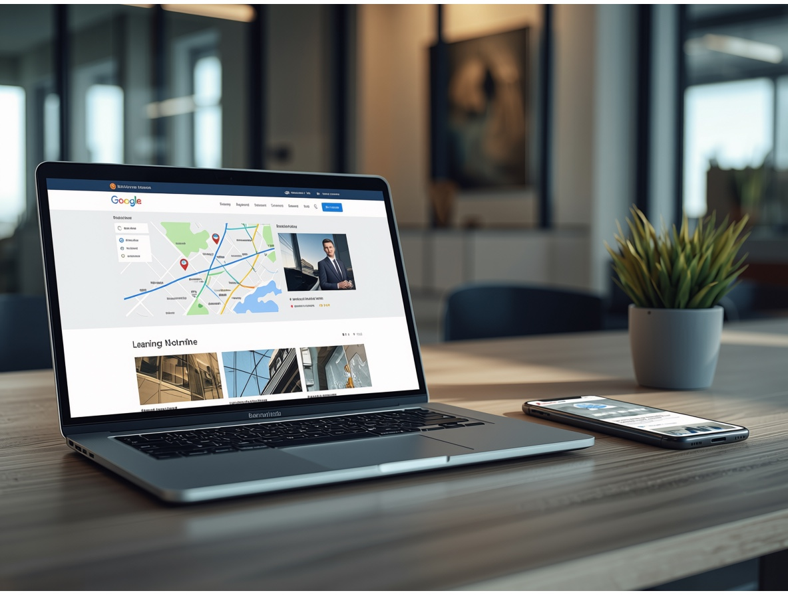

Klar auftreten
Webseiten & digitales Auftreten
Eine gute Unternehmenswebsite erklärt schnell, was angeboten wird, schafft Vertrauen und macht die Kontaktaufnahme einfach. LDigital entwickelt klare, mobil nutzbare Webseiten ohne unnötige technische Spielerei.
- übersichtliche Seitenstruktur und verständliche Inhalte
- saubere Darstellung auf Smartphone, Tablet und Desktop
- klare Kontaktwege und technische Grundlagen für Sichtbarkeit